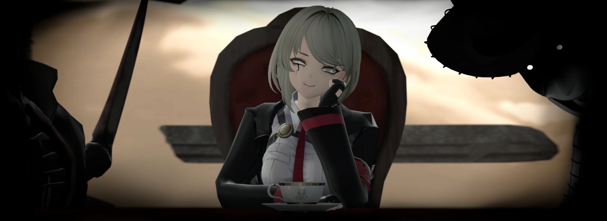
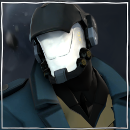
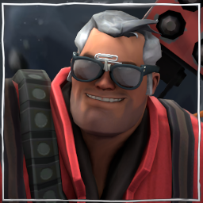
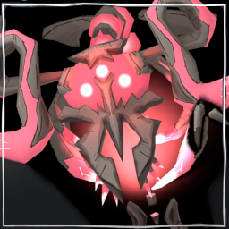

A series created as a comeback in 2026, Artemus Division does not have an official public name, taking the form of Garry's Mod "Sepcial Programs". This series was developed to give me an excuse to work on random characters of my choosing, no matter the video game IP or the artstyle.
The story takes place in two locations: within the written story and the existential plane outside of it. Artemus, the creator of the Universe, seeks inspiration through the exploration of combat and characters. However, the world built around Team Fortress 2 went rogue as the TF2 community began to embrace spectacle and fetish content, attacking creators for refusing to conform. Dell Conagher was Artemus' first character who was martyred for this.
Without an anchor and with a world that became uninspired, Artemus vanished from the scene for a few years, that is until he decided to return with plans of creating a new story, a new world that shut out community influence to allow characters to evolve. This new world would use Garry's Mod as a base, as the game naturally bridged multiple worlds together.